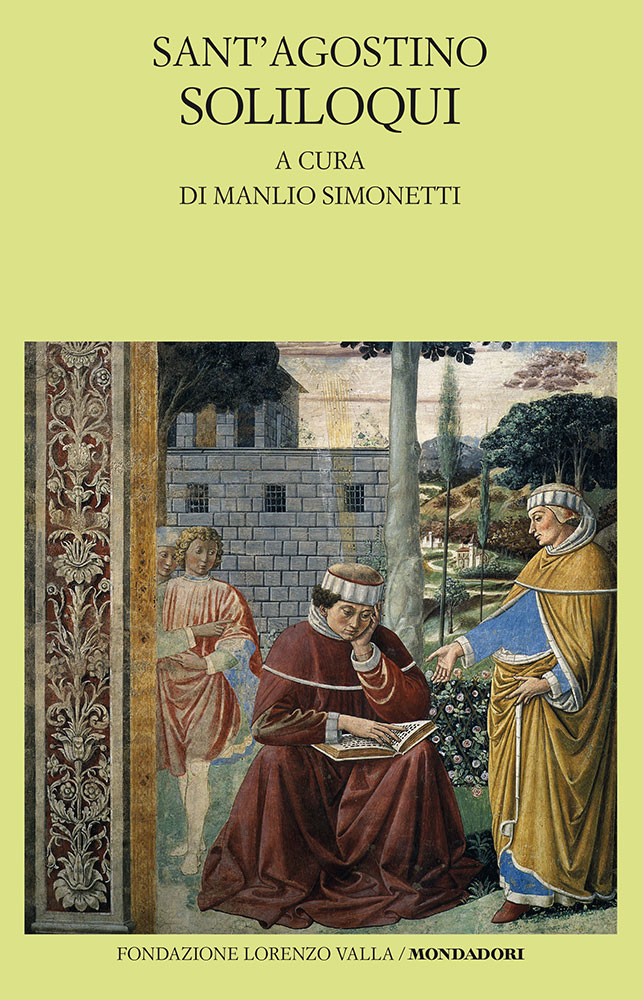
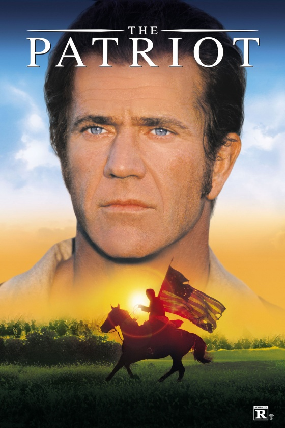

41:16 · 7 OPERE
La violenza proviene dall'irrazionale: considerazioni sull'attacco ad Israele.
Il filo del discorso
Il relatore prende le mosse dall’attacco ai civili in Israele riconoscibile come quello del 7 ottobre 2023, che condanna come una negazione della dignità della persona. La sua tesi è che l’irrazionalità favorisca la violenza e che un sistema culturale capace di indebolire il giudizio individuale renda più difficile riconoscerla. Nella prima parte contesta un messaggio attribuito ad Alessandro Orsini, critica la comunicazione dei media e propone una propria lettura della storia israeliana e palestinese.
Leggi la sintesi completaRiduci la sintesi
La scheda mantiene questi giudizi attribuiti e chiarisce che l’esistenza di un popolo non dipende dall’avere già posseduto uno Stato sovrano o una lingua esclusiva. Il riferimento rabbinico a una vita come a un mondo intero e una scena del film The Patriot sostengono il tema della responsabilità personale. La seconda metà è dedicata a una lettura dei Soliloqui di Agostino: la preghiera iniziale diventa occasione per collegare verità, bene, bellezza e razionalità. Il relatore interpreta la liberazione dalla stoltezza come un compito comune alla teologia e alla cultura. La conclusione invita a esaminare i fatti e a dialogare senza affidare interamente il proprio giudizio a una autorità esterna. Le note distinguono il testo agostiniano dalle sue applicazioni politiche e dalle espressioni cliniche usate polemicamente dal parlante.
I libri nel discorso

Sanhedrin 4:5 (Mishnah)
Identificazione probabile
Note sul riferimento
Volume del Talmud che contiene il passo: Passo della Mishnah, Sanhedrin 4:5, anche in Talmud Bavli Sanhedrin 37a. Immagine del contenitore: The Noé Edition Koren Talmud Bavli, vol. 29, Sanhedrin Part One, commento di Adin Even-Israel Steinsaltz, ebraico e inglese, ISBN 9789653015906, comprendente il testo fino a 49a. Il passo non è un libro autonomo di Steinsaltz.
Immagine editoriale autentica vista integralmente: volume bianco e oro, Koren Talmud Bavli, Sanhedrin Part One, commento Rabbi Adin Even-Israel Steinsaltz, numero 29 sul dorso e oggetto rituale in basso. È la rappresentazione del volume contenente il passo, non una copertina dedicata a Mishnah 4:5. La foto del dorso e del piatto è pubblicata da Koren; respinta la precedente immagine Google quasi nera senza titolo leggibile.
Famosa frase del Talmud su chi distrugge una vita come un mondo intero, collegata ad Adamo creato solo. Passo riscontrato in Mishnah Sanhedrin 4:5; numerazione non pronunciata.

Soliloqui
Note sul riferimento
Copertina: Fondazione Lorenzo Valla–Mondadori, 2016, a cura di Manlio Simonetti, ISBN 9788804664505. La Fondazione indica uscita 8 settembre e 216 pagine; il catalogo bibliotecario descrive XXXV e 167 pagine. Immagine e dati editoriali appartengono a questa edizione, non alla diversa Città Nuova del 1997.
Copertina autentica Valla–Mondadori vista integralmente, 643 × 1000: fondo giallo chiaro, Sant’Agostino, Soliloqui, a cura di Manlio Simonetti, scena figurativa con il santo al libro e marchio editoriale in basso. Respinti il marchio generico della Fondazione e la miniatura troppo piccola di un’altra edizione. Nessuna edizione materiale del relatore attribuita per supposizione.
Soliloqui di Agostino espliciti e successivamente letti e commentati a lungo, con corrispondenze nel libro I, 1.2–1.5.

Dialettica dell’illuminismo
Note sul riferimento
Copertina: Einaudi, Piccola Biblioteca Einaudi, 2010
Edizione illustrativa dell'opera, con traduzione di Renato Solmi e introduzione di Carlo Galli; non identificata nel video.
Dialettica dell’illuminismo esplicita nella discussione sull’industria culturale.

Il patriota (The Patriot)
Note sul riferimento
Locandina ufficiale Sony Pictures: Film del 2000 diretto da Roland Emmerich, sceneggiatura di Robert Rodat, con Mel Gibson e Heath Ledger. Immagine promozionale verticale ufficiale Sony; non copertina di un libro o confezione di una edizione home video.
Locandina autentica vista integralmente: titolo The Patriot bianco, volto di Mel Gibson, cavaliere con bandiera statunitense nella parte inferiore, classificazione R. Il file verticale è quello indicato dalla pagina Sony come title key art / onesheet; non viene presentato come volume cartaceo.
The Patriot con Mel Gibson esplicito, scena di discussione pubblica sulla guerra.

Confessioni
Note sul riferimento
Copertina: Città Nuova · 1995
Copertina autentica controllata visivamente. Edizione di riferimento; non identifica l’esemplare usato o citato nel video.
Confessioni di Agostino esplicite nel confronto con i Soliloqui.

Genesi
Note sul riferimento
Copertina: Einaudi, I libri della Bibbia / Einaudi Tascabili, 2000; introduzione di Steven Rose
Copertina dell’edizione autonoma Genesi, nella serie I libri della Bibbia, con introduzione di Steven Rose. Edizione scelta come riferimento iconografico; nessuna edizione è confermata nel video.
Libro della Genesi e domanda Dove sei ad Adamo espliciti, localizzazione redazionale 3:9; richiamo anche alla creazione e alla luce.

Proverbi
Note sul riferimento
Copertina della Bibbia che contiene Proverbi: San Paolo, 2014 · Nuova Versione dai Testi Antichi · edizione di riferimento
Copertina dell’intera Bibbia. Non rappresenta un’edizione autonoma dei Proverbi e non identifica l’edizione citata nel video.
Libro dei Proverbi esplicito, Sapienza che grida nelle vie: richiamo compatibile con 1:20–21, numerazione non pronunciata.